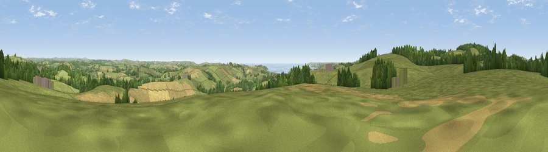

Viewpoint near Lanlivery
#5368 in England · top 12% of its area beats it · near LanliveryWhere it is
The exact computed spot (SX 08525 57812). Click the marker for map links.
The view, rendered

A 360° render of this exact spot computed from the terrain model, tree cover and land cover — summer colours, afternoon light, calibrated against photographs of famous viewpoints. Real trees, hedges and buildings will differ in detail.
The panorama
Grey silhouette: terrain skyline in each direction (720 bearings, Earth curvature and refraction included). Dashed green: skyline with trees (+15 m) and buildings (+8 m) as obstacles. Blue strip: how far the ground is visible on each bearing.
Where the view opens
Wedge length = distance to the farthest visible ground on that bearing (vegetation-aware). Rings at 10, 25 and 50 km.
What fills the view
58% grassland · 23% cropland · 15% woodland · 3% water
Angular shares of the visible panorama (visual magnitude), not map area. Landscape diversity 0.46 (0–1 Shannon).
Key numbers
More beautiful places nearby
The staircase of upgrades: each row has a higher view potential than everything closer. Driving times are estimates from straight-line distance, calibrated against real road routing — check an actual route before setting out.
| Place | Direction | Drive | Score |
|---|---|---|---|
| Viewpoint near Lanlivery | W · 1 km | ~4 min | 71.9 |
| Viewpoint near Lanlivery | N · 3 km | ~7 min | 72.0 |
| Viewpoint near Lanivet | NNW · 6 km | ~12 min | 73.1 |
| Viewpoint near Trethurgy | WSW · 6 km | ~13 min | 84.1 |
| Viewpoint near Stenalees | W · 8 km | ~17 min | 88.0 |
| Viewpoint near Crackington Haven | N · 37 km | ~55 min | 88.1 |
| Viewpoint near Combe Martin | NNE · 104 km | ~128 min | 88.9 |
| Holdstone Hill | NNE · 104 km | ~129 min | 90.2 |
50.38894, -4.69498 · source: screening · position refined by local search. Computed location — check access rights before visiting.